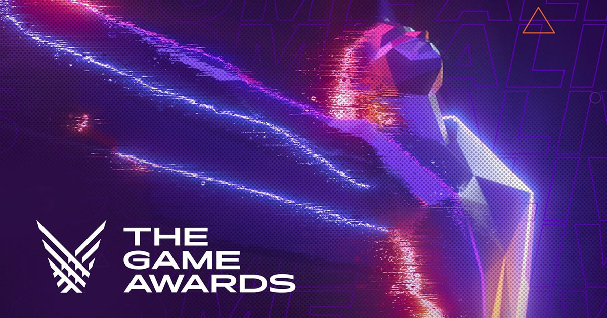
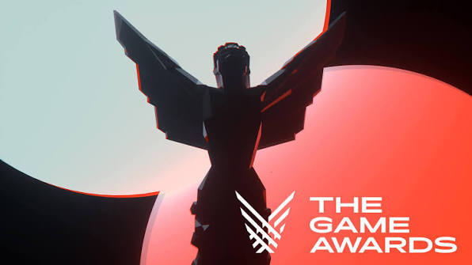

Giới thiệu

Game of the Year (GOTY) – "Trò chơi của năm" – là danh hiệu cao quý nhất trao cho tựa game xuất sắc toàn diện về cả lối chơi, cốt truyện, đồ họa, âm thanh lẫn tác động tới ngành công nghiệp game trong năm đó.
Ý nghĩa và Bản chất của GOTY

- Không phải do 1 đơn vị duy nhất bình chọn: GOTY là thuật ngữ chung. Tương tự như giải "Phim hay nhất" trong điện ảnh, hàng trăm tạp chí, trang tin game (như IGN, GameSpot) và các lễ trao giải lớn đều bình chọn danh hiệu GOTY riêng.
- Giải thưởng danh giá nhất (The Game Awards - TGA): Trong số các sự kiện trao giải, The Game Awards (do Geoff Keighley sáng lập từ năm 2014) được coi là "Oscar của ngành game". Danh hiệu Game of the Year tại TGA là hạng mục quan trọng và được chú ý nhất.
Trang chủ
Tiếp theo